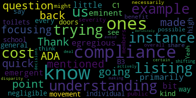

AI-generated transcript of Regular MSC Meeting - 4.7.2025
English | español | português | 中国人 | kreyol ayisyen | tiếng việt | ខ្មែរ | русский | عربي | 한국인
Back to all transcripts
[Lungo-Koehn]: Medford City Hall and via remote participation immediately following the public budget hearing. This meeting is being recorded. The meeting can be viewed live on the Medford Public Schools YouTube channel through Medford Community Media on your local cable channel, Comcast Channel 9, 8 or 22 and Verizon Channel 43, 45 or 47. Participants can log or call in by using the following Zoom link. Please enter meeting ID 958 8801-2206 when prompted. I will call the roll. Member Intoppa? Here. Member Graham? Here. Member Branley is absent. Member Olapade? Here. Member Ruseau is running late. Member Reinfeld is running late. And myself, I am here. That's four present, one absent, and two running late. I don't believe we have any, right? Four? No student reps yet. So if we all please rise to salute the flag.
[SPEAKER_10]: I pledge allegiance to the flag of the United States of America and to the Republic for which it stands, one nation under God, indivisible, with liberty and justice for all.
[Lungo-Koehn]: We have executive session upon motion to enter into executive session for two and pursuant to general laws, chapter 30, a 21 a two to conduct a strategy session in preparation for negotiations with non union personnel, specifically the contracts of principals Martha Cabral Medford High School Chad found a method vocational technical high school. Curtis Tufts, Nicholas Tucci of McGlynn Middle School, Jennifer Skane of Andrews Middle School, Michelle Crowell of Roberts Elementary School, Shannon Demos of Brooks Elementary School, Nancy Sherman-Hudson of Missittuck, and Andrew O'Brien of McGlynn Elementary. Is there a motion to enter executive session? So moved. By member Intoppa, seconded by member Olapade. I will call the roll. Member Intoppa? Yes. Member Graham? Member Branley is absent. Member Olapade. Yes. Member Ruseau is late. Member Reinfeld. Yes. And myself, yes. That is five in the affirmative, one absent, one running late. And we will come back to regular session when we are finished. Okay, thanks, everybody. We are gonna record again or keep recording and get to our regular business. We have number four good of the order. Is there any items under good of the order? If not, I'm going to move to the consent agenda. Member Graham.
[Graham]: Hi, thank you. I just wanted to make sure that my colleagues knew that MASC's annual day on the hill is on May 6, which is a Tuesday. It starts at the UMass club downtown at 9am and There's some speeches from folks from MASC and from the state legislature. Usually, often students are in attendance from Medford. And then everyone is invited over to the state house to the Great Hall for lunch, which is put on by students from vocational programs across the state. So it's actually like a super cool event. I don't know if our culinary team ever participates, but And then typically our delegation invites us to dine with them. We all grab lunch and I always find those conversations really interesting. So you register on the MASC website. I'm planning to go unless my schedule gets in the way, but it's always sort of a fun, interesting time. And hearing from students from other communities is always very cool too. Thank you.
[Lungo-Koehn]: Thank you, Member Graham. We have our consent agenda, approval of bills and payrolls, approval of capital purchases, approval of grants, approval of field trips, approval of meeting minutes, public budget hearing March 24th, 2025, and our regular meeting March 24th, 2025. Is there a motion for approval of our consent agenda? by member and tapa seconded by member of a party. Although, those in favor, do we have money in there. No, sorry. All those opposed, motion passes. And we do not have any reports of subcommittee, we do have a number of reports from our superintendent presentation of the governor's citation to miss Jennifer skein, our principal of the Andrews Middle School, I'm going to turn over to Dr. Suzanne Lucy, our interim superintendent.
[Galusi]: Thank you very much. Good evening, everyone. For, I would like to ask Ms. Skane to just come to the podium. I'm going to give just a brief overview as to why we are honoring Principal Skane here this evening. So on the morning of Tuesday, February 11th, a small fire broke out in one of the first floor bathrooms of her middle school, the Andrews Middle School. When alerted of the situation, she quickly After the fire started miss gain quickly grabbed the nearby fire extinguisher and immediately entered the bathroom to extinguish the flames without even knowing the size of the fire simultaneously. She also ordered the safe evacuation of her building. by giving her staff very clear directions and staff and students proceeded to the McGlynn. No one was hurt or affected by that incident. She remained on scene. She sent her school with the assistant principal. She remained on scene to handle the situation that was ongoing and the subsequent investigation. She also ordered And worked very collaboratively with myself and our communications director will pitch Ellie for all communication to caregivers and the community, as well as her staff, everybody was completely notified about their child's safety and the situation at hand. And she very well and professionally collaborated with the Medford Fire Department, the Medford Police Department, the Board of Health, as well as central leadership that was there. And there really was, the students were safe all day and there was very minimal disruption, not just that day, but also that week to the learning. And so Dr. Cushing and myself worked on the citation through the governor's office, Governor Healey. And so before we kind of go through the citation, I would like to give Principal Skane the opportunity to maybe just say a few words about that day.
[Jennifer Skane]: Thank you, Dr. Galusi. So what I can say is that it was not a individual effort by any means. I felt very grateful that one phone call to Dr. Galusi and Will, and they were there within five minutes communicating to families. Within, I think we determined it was eight minutes, all students were evacuated from the building and at the McGlynn. So At the end of the day, the students really their feedback was it was really a boring day so if you can have that much excitement and chaos and the students feedback it was kind of boring I guess we did some things right. I want to say that. This was not a singular effort. Nick Tucci, I picked up the phone I said my entire school is on the way to your building and he said, bring them on. So it was nice to have that opportunity, as well as parents who were super. helpful and helped keep their kids calm the students were really calm. I think the food services we've got amazing feedback from the students that they think that we went out of our way to make them some special food that day. They served six lunches in the time that they traditionally do three plus they fed our entire staff at Andrews Middle School so that was a huge momentous task and they did a great job. So truly, thank you, but I can't say that I did this alone, my staff stepped up every single one of them. We had been working on some new fire emergency evacuation procedures and what we discovered is they worked amazingly well. So we'll continue to, as a staff and as a building, you know, communicate how do we do these things effectively, but I think we did pretty well that day. So thank you.
[Lungo-Koehn]: Thank you. Yes, thank you, Ms. Skane. I was on the phone with Dr. Galussi after the incident happened and what she explained that you did for our school and our students and our staff going in there like a firefighter yourself is very impressive. It just shows the You have that part of your brain, they say, that it's just response, response, response. So thank you for all you did. And this is a citation from the governor's office. So I'll just read it. Commonwealth of Massachusetts to Principal Jennifer Skane, on behalf of the residents of the Commonwealth of Massachusetts, I am pleased to confer upon you this governor's citation in recognition of your heroic efforts to protect the students and staff of the Andrews Middle School. We commend your quick thinking and resolve to immediately extinguish a growing fire and prevent a larger catastrophe. Your bravery and fast action are a testament to your true leadership and strength of character as principal of the Andrews Middle School. The Commonwealth thanks you." And this was signed the 24th day of March, 2025 by Lieutenant Governor Driscoll and Governor Healey. So congratulations and thank you. It seems Will might want a picture. Next up, we have the overview of search processes for Assistant Superintendent of Academics and Director of EL Openings. I'm going to again turn it over to Dr. Galusi, our Interim Superintendent.
[Galusi]: Thank you. Oh, thank you Dr. Cushing. So many of you may have seen in last Friday's memo I did highlight a lot of this work that we have in the district but I felt it was very important to also make sure that we mentioned it at this meeting here. for the greater community. So we have two very key pivotal roles at central office that need to be filled. One of course was the one that I sat in for the assistant superintendent of academics and instruction. And the other one is for the director of the English learner department. Paul Texera has held that position for a number of years, but he was most recently named as the next superintendent for the Provincetown school department. And so he will, his employment with Medford Public Schools will be sadly coming to an end on June 30th. And so it's very important that we just highlight what that process is going to look like for both of these key roles. So just to make sure, There is a greater understanding the position of the assistant superintendent for academics and instruction has that vertical view of teaching and learning for the district from pre-K to grade 12 and beyond. They play an important role in shaping curriculum decisions, instructional decisions, and works very, very closely with our department leads as well as school leadership and central administration. making sure that we are grounded by our instructional vision and that our students are given the high quality education they deserve. Our director of English learners supports the diverse population of all of our students where English is their second language. They work in planning and developing and coordinating their delivery of educational instruction that supports the EL needs. This is a key position that works closely pretty much with all administrative positions and educator types positions across the district, as well as building strong family community partnerships within that population and broadly. So we want to make sure that the process is thorough and that we're reaching out to a varied number of stakeholders. And so the importance of collaboration is key in this process and with the school and district communities. So we are, as you saw in the Friday memo, we have sent out a letter and we have sent out two surveys. one for each role. We are hoping to have two things for that initial outreach. We are looking for interest, in people to serve on the search committee. So we are looking for, again, varied stakeholders from students to caregivers, to staff, to administration. There's one for the assistant superintendent and one for the EL director. And within that survey, we also pose some questions to get some initial feedback regarding the qualities that they feel are critical for a candidate to possess for each role. We also will be following up with a greater level of input pertaining to discussions or roundtables or targeted surveys for each particular role. for the assistant superintendent for academics and instruction. That will be co-facilitated by myself and Joan Bowen, director of student services. We are just starting to look now through the survey so that we can build what the search committee will look like. And for the director of EL, that will be co-facilitated by Paul Texera and Nancy Sherman-Hudson, principal of the Missituk Elementary School, that houses one of our newcomer programs and has for the past several years since we implemented the newcomer programming. And day two, you can see we have a very similar time frame that we are going to conduct for this search process. We have sent out the survey. We are monitoring it closely. We will be creating the search committees. Is that better? Okay, and then we will start the interview cycle. The key piece of creating a search committee is for that first round of going through the qualified candidates and doing the first round of interviews before we move on to the final round of interviews. I will make sure that we are keeping the community well-informed. Once the committee has been formed, we will communicate that to the district so that you are aware of the composition of each search committee. If there are any questions at this time before I move on to my next item.
[Lungo-Koehn]: Member Graham.
[Graham]: Thank you. What role does the school committee play on these committees? Do you have an idea about how you want us to be plugged into this?
[Galusi]: Absolutely, yes. So as all of our search processes that we've had to date, there's been a school committee representative on each of the search committees. So it is my intention that that is still going to happen for the assistant superintendent, as well as the director of EL.
[Graham]: And do you want us to apply using those same links that you sent to us?
[Galusi]: Please.
[Graham]: OK, thank you.
[Reinfeld]: I have the same question, but I also wanted to confirm that if somebody has initial feedback on what they're looking for in the role but does not want to serve on the committee they should still answer, they should still respond to that survey. Yes, I think if you do a second push, it would be really useful to put that in there because I certainly read that as, if you want to be a part of the committee, that's what the survey is for, rather than also feedback.
[Galusi]: Sure, thank you for that feedback. I know that there was, so the original letter that went along with that for both surveys did say that we're looking for interest and input. So, but to be more targeted and clear, we'll follow up with another vehicle for input and feedback.
[SPEAKER_07]: OK, do you want me to go to the next one? Yes, OK.
[Galusi]: OK, so the last report that I have this evening is I've brought forward an update to the policy language for policy IKF regarding the graduation requirements at Medford High School. So in an effort to add some additional context and or clarity to the IKF policy, Medford Public Schools would like to update the following language based on stakeholder input and feedback. So we have received some feedback from stakeholders regarding some areas of the current policy that would be most beneficial to add a little bit of clarity to. So the first one is around the introductory language, which I will speak to in a following slide, but that specifically targets the participating students in graduation in the graduation ceremony. A little bit more clarity to the math requirements, since the implementation of the pathways just to be very clear by class. what the requirements are, and then a little more specificity to students with significant needs. So if we go to the next slide that talks about introductory language, one more. Thank you very much. So you'll see I have highlighted where we've built out a little bit more of the of the clarity, so that we're very clear in who's participating in the graduation, which is all Medford high school students that have received a diploma or a certificate of completion. And I just want to make sure that we're very clear there's an asterisk there. So one of the pieces is that at the bottom where we've kind of had our footnotes, I wanna be clear that we're mentioning that the decisions regarding students in our substantially separate programs are made through the individualized education program process, which is the IEP process. So all students that receive a diploma or a certificate of completion will absolutely participate in graduation. And more specifically, the following outlines the requirements that must be met to receive a diploma, which include a total of 112 required credits and the completion of the competency determination. I don't know if it's best for me to keep going, or if you would like to ask questions with each clarity, which with each clarification.
[Lungo-Koehn]: There's no questions right now keep going.
[Galusi]: Yeah, I'll let you know, just the next section, where we were receiving a lot of questions and rightfully so. we have implemented integrated math pathways at the high school. So this just breaks out what the requirements are by class. So for this current class of 2025, next year's class of 2026, and the following year's class of 2027, for our local graduation requirements, they have to pass geometry or integrated math one, in ninth grade and they have to pass algebra two or integrated math two in grade 10. And just as a side note, this was the first year where freshmen entered the integrated math one. which is why you'll see for class of 2028 and beyond, it would be that as freshmen, they have to pass integrated math one, CP or honors. And in grade 10, they need to pass integrated math two, CP or honors. And then it's a little redundant, but following, In the further consideration section within the IKF policy, we just added specifically that students with significant needs, that decisions regarding students in our substantially separate programming are made through the IEP process. That is my recommendation. If you have any questions, please let me know.
[Graham]: Member Graham. Thank you. I just wanted to thank the members of the community that reached out to myself and member Reinfeld in particular who asked some good clarifying questions about the math sequence in particular and then some of the clarifications around who gets to participate in graduation because that's obviously super important when we talk about grad requirements, as well as some clarifications around students with IEPs that are sort of directing the graduation requirements a little bit differently. So there were two or three parents that reached out and we were able to have a quick meeting to come up with some clarifying language. I think my question is, does this need to come back to the agenda next week because it is an official policy? So do we
[Lungo-Koehn]: make a motion to approve it now and then put it on the agenda for a second reading next meeting yes okay so we'll make a motion to approve this as um as suggested and if i just may ask a question from the chair and then i'll pass it to member and tapa the 60 total hours of community service is that spread out 15 hours and i'm sorry if i'm ideally 15 hours per year ideally I didn't know.
[Galusi]: Ideally, but every student has kind of their own course. Yeah. So, I think to make it more manageable, that's a great way to do it but by the end of the 4 years, they have to have done at least 60 hours. Yes.
[Lungo-Koehn]: Okay. Member Tapa.
[Intoppa]: Oh, I was just going to say that if there are no other questions from the committee that I can second the motion as written. I think that, you know, the addition of the know, clarification on who will walk at graduation. I know that that is a huge, I'm sure, stressful point for, you know, members of the community who, you know, that may be an issue for us. So, I'm just, I'm happy to see that that's inclusive. Passing of geometry, it's all pretty written out. So, I, if there are no other questions from the committee, then I, it seems like we do. Then afterwards, I'll second the motion. Thank you.
[Reinfeld]: Member, Member Reinfeld? I would just amend, replace further considerations and next steps with additional considerations, since it's a policy and not on the top of page three. It's not part of the policy? OK.
[Galusi]: No, it's not.
[Reinfeld]: Maybe that was a question.
[Galusi]: No, but I think that's why it is repetitive right now, because we made sure that we added this statement to the footnotes that is reflected in the policy.
[Reinfeld]: And I guess the question is, where is this page three content available for people to view?
[Galusi]: I can double check on that. I know that the original was linked into my letter, but I will double check what is actually posted on the website.
[Reinfeld]: Because I think since this addresses questions that the community had about students in particular situations, like transfer students, significant needs, et cetera, it should be available and easy to find place. Sure.
[Lungo-Koehn]: Mayor? Member Ruseau?
[Ruseau]: I'm actually, I'm fine with just adding it to the policy, although I would remove the words further consideration in the next steps and just, and just, or not including the header at all and just all that text minus the header.
[Galusi]: Without the title?
[Ruseau]: Yeah.
[Galusi]: I'm fine with that.
[Lungo-Koehn]: Member, so if you just could repeat that, I was just reading something else.
[Ruseau]: just to strike further considerations and next steps and include that language on that page as part of the policy. This policy is updated every six months anyways. So we'll just scrap whatever we don't need in October when we review it next.
[Lungo-Koehn]: Member Tapa.
[Intoppa]: Just a quick point of clarification. So on page three, this was something I was actually gonna ask and I completely forgot. So last bullet point, former MHS students without CD, is this, I'm assuming this is what this is, but I just want to clarify. So this is basically saying, if you did not graduate, you can retroactively apply for either a certificate of completion or a diploma, or is it just certificate of completion?
[Galusi]: Right. So these are for the students who did not pass MCAS. So they got a certificate of completion and not a diploma. And so if they would like to go through the steps of getting a diploma, which is just really having us look into their transcripts on an individual basis. If they pass the proper coursework that now applies to our CD, our competency determination, then we can go through the process to kind of fix that for them and issue them a diploma. If they did not, let's say pass the coursework, then it also allows us on an individual basis to have a conversation with them about what they could do to accrue those credits and earn a diploma.
[Intoppa]: Awesome. No, I love to see that because I saw, I believe I'm going to, I'm sorry, I'll talk less loud. So it doesn't echo. So I think I saw another district within the state or maybe even, yeah, head of the state because we passed the MCATs ruling, like really publicly mentioning this. So I think we have a lot of work to do to work with our MarCom team, as well as our alumni association to really push this and be very clear about, yes, it's an immutable basis, but we'll help you get there. So that way, you know, this is an unfair thing. We're fixing it. The state has entrusted us to fix this. Like, let's not, like, let's go back and do that. And just to make that very clear in any way we can. So thank you. That's really nice to see. And obviously I still second the motion on the floor.
[Lungo-Koehn]: So there's a motion for approval as amended before I call the roll or move the motion. Member Reinfeld.
[Reinfeld]: One more amendment is just to add eligibility for a diploma under the post-2024 requirements so that it's explicit that this is about the diploma. Last bullet point to assess eligibility for a diploma under. Eligibility for a diploma. And then I will stop amending things. Oh, you'll get me next week, yeah.
[Lungo-Koehn]: OK, motion for approval by member Graham, seconded by member Rousseau as amended. All those in favor? Aye. All those opposed? paper passes.
[SPEAKER_07]: Thank you. Yes. Yes, I will. Thank you.
[Lungo-Koehn]: We have number four recommendation to approve bond request of the Met of Medford City Council of $25,775,000 for the McGlynn and Andrews HVAC project Dr. Peter J Cushing assistant superintendent. We also have Brenda Pike from planning development sustainability and our director Planning Development sustainability Alicia hunts with us as well. Thanks for being here everybody.
[Cushing]: Good evening. We also have our own as project manager Tom. Yes. Thank you very much for this opportunity to request the last sum of money for this project, and which will be as has been mentioned previously. not only repairing and replacing the equipment that is there, but will also serve as a significant energy reduction for the city. So, the initial design came to $1.298 million. We requested for phase one construction. for phase one construction $5 million a bond, which I can't believe that was December, already, it. I had to actually go back because it didn't feel that long ago, and requested $5 million for pre purchase through some really heroic efforts of our design team Brenda, Paul Riggi, Alicia, Tom, and many other people really working on this project, which is a sprint. In order to make sure that we get this work done in time, a lot of complicated pieces from procurement to design and funding all have to fall in place very well. And so the work is moving forward. and frequent meetings, frequent reviews and frequent visits to the schools as well to make sure that this project is on target and moving well. So that $5 million work and the pre-purchase was submitted this past Friday successfully, right? So that equipment can be built in time to be delivered onsite and hoisted into position prior to school starting. fingers crossed. Any questions on phase one, which we've discussed extensively previous. Our construction budget. coming in in the neighborhood of $22,945,533. Total construction costs $19,279,000. Our owner's construction contingency is just shy of $700,000 at $687,000. The designer through construction costs to make sure the designs if need to be updated, anything along those lines, $1.3 million. OPM, JLL through construction 484,000 just want to mention our designer B2Q previously mentioned that and our owner contingency that is not considered in the gross maximum price GMP stands for gross maximum price when you have construction manager at risk. uh everything has to be they're involved in the design process and everything has to be baked in in this final gross maximum price so uh not considered there anything you'd like to add at this time brenda not to this section to the to the other cost definitely okay so other costs why don't you take that away then sure um so yeah so we have we're calling this under
[Pike]: All these other things underneath that we're putting under other costs but there are things that are required for this project to happen, including commissioning of the new equipment 500,000 ADA upgrades that the new, the new project is triggering. So we have included six around $619,000 for ADA upgrades including. the leveling of the entrance at McGlynn, and some other ADA upgrades that are, we consider really useful and not too costly. And then there are another just want to highlight for you there's another $2.3 million in Ada upgrades that we do not consider useful. And are too costly for this project, and so our consultant based on their past experience thinks that for those upgrades, we will be able to get variances from the state and so. April and May, we'll be applying for those variances and getting those approved. We fully expect that we will get them, but I just wanted to mention that that's happening. We're including the cost of the IT room HVAC equipment replacement for these two schools in this project. The other three schools, IT room equipment is being handled separately from this. This includes refurbishment of the McGlynn roof, not full replacement, just refurbishment. And I wanna point out that while we're considering that we fully expect that we will get massive incentives for around $2.2 million, we do have to authorize spending upfront for that. And then that's a reimbursement that we'll get some months later. And then we had been talking about including solar potentially as an add alternate for this project. Right now we're not including it as part of the project, because of the cost of it, but there's the possibility if we do come in significantly under cost, then we could add solar on the roof. And that's a distinct possibility because we do have a lot of our regular construction and owner contingencies included as part of this. And then also another more than $2 million of contingencies built in for possible tariffs and possible second shift work in case there are delays that will create a time crunch so that we need to do a lot of second shift work in order to get this done by the time students are coming in.
[Cushing]: We're obviously hoping to avoid any second shift work. We have already made plans internally to move programming elsewhere in the district. And just want to make sure that everyone knows that the ADA upgrades get triggered when any single project goes over 30% of the value of the buildings. or the assessed value. And the pieces that are not being addressed in this and that we are seeking variances for are literally a matter of inches. So moving entire door frames for every classroom forward or backwards an inch or two to be in code compliance or moving a toilet from 17 inches to 18 inches to be in the the benefit is not there to spend the $2.3 million. We are addressing the most severe and egregious upgrades that are required and we'll do everything we can to make sure that our buildings are compliant. But these variances are seen by the code consultants as well within the realm of acceptability. Happy to take any questions.
[Lungo-Koehn]: From the chair, if I may. The potential solar option, can you explain those options down the line, whether it be purchasing or is there an option to lease like homeowners have?
[Cushing]: Brenda, you are the best.
[Pike]: Yeah, so there is the option to lease, to have a power purchase agreement, which is something that we have on the DPW. So that that is an option for the future. I would say the best value in terms of the, you know, getting the benefit from the solar is if you own it yourself. But that's, you know, a decision you have to make, depending on the upfront capital available.
[Lungo-Koehn]: Yep, and I asked that and hopefully there'll be a team decision down the line, even if we don't come in under because of the tariffs and the second, potentially the potential second shift. Because just to point out, this is a massive, massive job. This is over 30 million that we're gonna be going out to bond with, although there are some discussions behind the scene about potential use of some free cash to bring this down. Because when we hit fiscal year 27 this is a $1.8 million hit on our budget for return principal and interest. So that's a 1.8 million we're going to have to find on the city and city slash school budget that is already pretty constrained. Just want to point that point that out. So hopefully it could be a group decision. Thank you. Reinfeld? Member Graham, then Member Reinfeld.
[Graham]: Thank you. In terms of the solar at alternate, I think it would be helpful for us to know what the payoff is, right? So if it would cost $1.2 million to put solar on the roof, at what point is the payoff there so that we are making wise financial decisions for the life of the project instead of just in the right now so I'm, I'm happy to make a motion but I would just like somebody to give us that break that financial breakdown of what does this look like if we do it. And what could we expect in terms of. lisasmith PB, Lupita D Montoya PB, she-her-hers): Electrical savings that kind of thing I know it's like imperfect and it's a moving target i'm looking for something that can give us like a payback period. lisasmith PB, Lupita D Montoya PB, she-her-hers): So that we could predict like could the could are there multiple ways to fund this this addition, so that we can get the best benefit from it.
[Pike]: lisasmith PB, Lupita D Montoya PB, she-her-hers): yeah before moving forward with something like that we would we would want to show the.
[Graham]: the payoffs based on Oh, I'm asking you to provide me the payoff, like regardless like of a decision to move forward, I would like this committee to know what that is, so that we can weigh in on that priority.
[Cushing]: We can definitely do that. One, we did also explore the terminal units in each classroom from an energy perspective. And I believe the payoff was 347 years for the terminal units. That doesn't have to do with solar. But we are looking at every possible cost savings opportunity to make sure that we are desperately trying to keep costs down. And we recognize this is a necessary upgrade or upgrade, I mean replacement. The buildings are approaching 25 years old.
[Reinfeld]: Thank you. Member Reinfeld. Yes, my question was related. You said this could be added on if we see costs are coming down. If we, say, decide that we want to do this, is this estimate going significant? I know we cannot always predict what the markets are going to do, et cetera, et cetera. But is there a significant risk in waiting to do a solar addition? That's a good question. What I'm trying to avoid is six months from now going, oh, we should have authorized this six months ago, for example. So thank you.
[Hunt]: If you had asked us this question a year ago, we could give you sort of a like, well, here's where the market is going and why we think things might go up and down. Given the state of the world right now, we have no clue. Because six months ago, we thought we could get a 30% back from federal government with what's called direct pay, which is the tax credit that people can get. While I think that literally today that might still exist, I'm not betting on that existing in like a week or two, you know, like that's how nuts things are right now. And then with the tariffs, they're trying to move the construction of solar panels to the US so that might actually help. And it might be okay, but there are rare earth minerals that they have to get from China and, you know, 50% increase on those costs. It's just, who knows where things will stand three months from now, let alone six months or a year. Honestly, my hope is that in two years, things will be kind of a little bit stable again. And then things would just be a reasonable, like, costs on these things.
[SPEAKER_10]: Thank you.
[Hunt]: I just I feel like it had to just be said that for most of this we we kind of we have things we're locking stuff in whatever that just feels like it's just I don't know how to predict something like that.
[Reinfeld]: Thank you and I appreciate locking things in because this has to get done before our kids go back to school in the fall. This has to happen over the summer so
[Hunt]: And I just, I feel like this committee does know, but we just should say for people who are known, the reason we're only talking about solar on the McGlynn is because we have contracted for solar on the Andrews, and that will be installed in the fall. There was talk of doing it in the summer, but after consulting with the general contractor and the solar company, the decision was to just do the construction after the new HVAC equipment goes in. But that's contracted for, the pricing is locked in, and that one is happening. What we don't know is, will we get that 30% back? I hope so. It still exists right now. All right.
[Reinfeld]: Well, I say we move, but I know my colleague has a... I'm going to go to Dr. Galusi and then member Olapade.
[Galusi]: I just have a quick question. Would how you approach the roofing contingency or the refurbishment of the roof have anything to do with this decision?
[Cushing]: No. The roof, interestingly enough, I came into this thinking that we would have a tremendous savings by doing a new roof and looking at solar and putting a new roof on the refurbishment of the roof gives us the same lifespan, and I believe I said that the over the. cost of the new roof and insulation was going to be approximately $3 million. And our payback on energy savings from the new insulation was only going to be about $300,000. So over the span of the life of the roof, it would cost us about $1.2, $1.3 million more than the refurbishment at $1.5 million, given the savings on the insulation. This has been a very eye opening project and.
[Lungo-Koehn]: So, opening expensive project.
[Olapade]: Thank you. It's a quick question going back to the ADA compliance point you made. I know you mentioned that you're focusing primarily on the most like egregious, you know, eminent ones or emergent ones for the ones that are a little bit more negligible. So like the movement of the toilets, for example, or the doors, is there a listing of like where, you know, how to say a listing of every individual instance of it, like in, you know, C1 and B3, for example, the high school, but is there a way for us to see just kind of like a general understanding about where those, like the severity of those, is that possible at all?
[Cushing]: Yes.
[Pike]: We have to list those out for in order to apply for the variant. So we have the list.
[Olapade]: Yeah, you could share that with us just so that we have that. I think that members of the public might benefit from having understanding that we're not not in compliance necessarily. But there are instances where the overall cost for the shifting of that, where the disparity is and so why we're making certain decisions. So we're not actively trying to avoid compliance, but there are those costs that we're trying to deal with.
[Pike]: And for a lot of them, I mean, the benefit is so minimal for the cost of it. So for instance, one of them is, you know, raising all of the sinks by one inch. That's a lot of plumbing and tile work and things like that. That'd be very expensive for very little benefit. Yeah.
[Olapade]: Definitely.
[Pike]: Yeah.
[Cushing]: But if I could just address a couple of the quick. So, over the years, schools, make install new toilet paper holders because they get a good deal on toilet paper from a company. Those were installed above the rails, they should be below the rails, because if a person is going to grab and they hit that they may miss, not they may they will miss the hold, and they could fall. Another one is doors swinging in instead of out. The final one that I'll mention is accessible sinks don't have insulation on the pipes. So if someone in a wheelchair pulls in, they could burn themselves on a pipe potentially. So these are things that were not part of the building code when the buildings were built. But when you do a project of this magnitude, these are the things that need to be considered and I can definitely share those documents with committee and anyone else that would like.
[Lungo-Koehn]: Thank you. Member Graham.
[Graham]: Thank you. One more question. The roof that causes it to rain sideways into the kindergarten classroom, is that being fixed?
[Cushing]: It is included. It has been mentioned how many times. I think I bring it up every other meeting.
[Graham]: Thank you.
[Cushing]: Thank you.
[Graham]: I really want that kindergarten class to be fixed.
[Cushing]: I also think that I've re-shared the same documents with everybody probably five times at this point because it's not falling off of my radar.
[Graham]: And I guess the other thing worth mentioning is with this list of changes that we're not going to pursue at this time like I do think the director of facilities and the to be assistant director of facilities needs to have that list so that the next time we get a deal on toilet paper and somebody comes to install you know, new containers for toilet paper that we're, like, hawking them to do it right and in compliance every single time we can. Like, I know from time to time, the maintenance team has to rebuild a bathroom for a variety of reasons, and if they have to do it anyway, they should be doing it in a way that sort of brings us to where we, you know, where we want to be, because those things are small, but they matter to people who need them. um I just want to make sure that it's on it it doesn't like go in the project file and go in a filing cabinet and instead it is very in a very real way still on our radar um as we move forward beyond this project. Thank you.
[Lungo-Koehn]: Member Intoppa.
[Intoppa]: I also just yeah I really want to echo that point of like while these things I guess what I want to say is when this list is sent to us, I really do welcome any community input about a lot of these issues because like, again, while they may be small to some people who may be a little more able-bodied or may not run into these issues, it's good to know like if someone has like, oh, I'm not crazy. Like this is actually something that significantly impacts my mobility, or this is something that, you know, just the day to day like this is a small frustration like yeah my knees get colder like they get burned from that like this is, these are all really good things that I would hope that the community would also be able to take a look at and say I used to I frequent this building this is something that affects me on a daily basis I thought it was small but I'm not crazy. Just that little affirmation of like no this needs to be changed. And we acknowledge that. Um but II do want to get a little bit away from the like, well, it's a little small like it does seem small to some people but like it really is a huge thing for a lot of people's day to day. So, just welcome that community input whenever that list is made available. So, thank you to my colleagues for for raising that that concern and ask and thank you for doing the work and thank you for acknowledging it.
[Lungo-Koehn]: Thank you. Um is there a motion for approval for this project? Remember all party. All those in favor, roll call.
[Ruseau]: Remember Graham. Yes, remember and Papa. Remember all the party. Yes, remember I'm Phil. Yes, remember so yes Maryland occur.
[Lungo-Koehn]: Yes 76 in the affirmative one absent motions approved. Thank you for the hard work. We do not have any presentations of the public or continued business, but we do have an item under new business 2025-11 offered by member Graham and member Reinfeld. Whereas Medford's graduation requirements regarding health and physical education exceeds state requirements. And whereas some high school students have substantial physical activity outside of the school day. And whereas some high school students are unable to access all aspects of educational programming offered by MPS. example is arts and language and core subjects and vocational education and PE health. Be resolved that the administration will provide a recommendation to policy IKF dash requirements for graduation that increases flexibilities for students by changing the health and physical education requirements. Be it further resolved that the administration will bring this recommendation to the committee no later than June 1st, 2025. be it also resolved the administration will be prepared to implement approved changes for the fiscal for the school years 2025-2026. Member Reinfeld, Member Graham, or is there a motion for approval? Member Graham.
[Graham]: Thank you. So, I put this on. I honestly don't remember ever touching policy IKF in six years and this is this is going to be our third go around this year, which is sort of interesting. And I think on the one hand like you don't really want to change your graduation requirements like constantly because that becomes really hard for students. Um in all of the conversation that we've had about the schedule and the need for changes to the schedule to increase flexibility and increase access. Um I think we have an opportunity to look at um the the health and PE requirements as well to say what could we do differently here? What do other communities do? Um to create some flexibility in our I don't think it's a perfect answer to every single schedule ailment that exists in the world. But I think there's maybe some opportunity for flexibility. Like if we can teach Spanish online, we can teach health online. I have every confidence in the world that that's true. If we have students who are multi-sport athletes, maybe they would prefer to wave out of it I don't know there's just there's a whole bunch of options that happen in other parts of the community and my feeling in bringing this forward was to hear from the administration what could work and provide flexibility and solutions to students who Even as we go forward with new scheduling options, it's still not perfect. My daughter is still talking about taking classes at Bunker Hill because there still isn't enough room in her schedule to do what she wants to do. I don't think it fixes everything, but I would like if we're going to make this big change to the schedule that we also look at the impact of some flexibility here so that we're not touching this policy you know, multiple times a year, every single year, and we can just sort of get it all done at this point. So that was my purpose for bringing it forward. I think, you know, I've heard lots of different scheduled challenges over the years. I don't know that this sort of solves every single problem, but I think having options is important because one size does not fit all in terms of all the programming that's going on at the at the high school. So I don't have a particular solution in mind. Member Reinfeld didn't have a particular solution in mind, but more to say, can the people who sort of live the complications of this every day bring forward some suggestions about how our graduation requirements might change? Thank you.
[Reinfeld]: Thank you, Member Graham. Member Reinfeld? I would just add to that, that the state provides limited flexibility in some areas. And so I think it's really important where there is some flexibility to increase, as member Graham said, options for students and provide students with the autonomy to do the things that they are passionate about and really make electives things that they elect to do while still meeting basic health and academic requirements. And I know our various departments have done a lot of work to build really wonderful electives in a lot of different areas. And I just want as many students to be able to access those as possible.
[Lungo-Koehn]: OK, so that's a motion for approval. Member Reinfeld? Yes. And seconded by Member Graham? Yes. All those in favor? Aye. All those opposed? Motion passes. We do not have any reports requested, but we do have several condolences. The members of the Medford School Committee expressed their sincere condolences to the family of Louise C. Jordan. For 39 years, she taught second and third grade at the Hervey Elementary School, the Lauren L. Dame School, and the Brooks Hobbs School. Notably, she arranged a first ever visit of then General Colin Powell, Chair of the Joint Chiefs of Staff to the Brooks Hobbs School in the early 1900s. Also the members of the medical school committee express their sincerest condolences to the family of Anthony Tony DeLuca, Tony was a carpenter with the Met for public schools, and the members of the medical school committee express their sincere condolences to the family of William Shane Horty husband of Mary Horty, former physical education teacher at McGlynn Middle School, who may rise for a moment of silence please. Thank you. Our next regular meeting is actually next Monday, April 14 2025 here in the Alden Memorial Chambers, as well as on zoom. Is there a motion to adjourn. I remember Reinfeld seconded by member and topper all those in favor. All those opposed to the affirmative one absent meeting is adjourned. Thank you.
Lungo-Koehn
total time: 56.74 minutes
total words: 1542
|
Graham
total time: 7.59 minutes
total words: 1240
|
Galusi
total time: 14.38 minutes
total words: 1962
|
Reinfeld
total time: 3.46 minutes
total words: 498

|
Intoppa
total time: 2.99 minutes
total words: 621
|
Ruseau
total time: 0.59 minutes
total words: 106
|
Olapade
total time: 0.78 minutes
total words: 194

|
|
|
|
|
|
|
|
|
|
|
|
Back to all transcripts
{kind=link}
{kind=link}
{kind=link}
{kind=link}
{kind=link}
{kind=link}